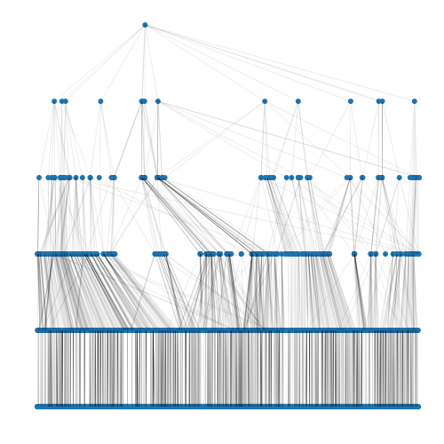

The goal of visATC is to extract subtrees and plot (as networks) from the WHO Anatomical Therapeutic Chemical (ATC) system. The ATC arranges medicines in a 5-level hierarchical system with body-system, functional and pharmacological levels. See https://www.who.int/tools/atc-ddd-toolkit/atc-classification for more information.
In this package, tree objects are created to represent this hierarchy, with subsets of the hierarchy made in different ways, including pruning or taking cuttings. Plots of the trees can be made in a layered or circular fashion. To reduce clutter, descriptive text about the nodes is made available by hovering over the nodes using the package plotly. Because the ATC system is so large, using hovering within plots (via plotly) is the main advantage of visATC.
The functionality here (code wholly rewritten since) was used as part of an approach to the detection of rare side-effects to drugs. This included Bayesian ‘partial pooling’ of event rates in families of drugs, with the family structure supplied by ATC. That analysis also supplied data to each node pooled from European pharmacological databases and included further modelling.
Results were reported in:
Schuemie, M. et al. (2012) Using electronic health care records for drug safety signal detection: a comparative evaluation of statistical methods. Medical Care 50(10):890-897
Installation
You can install the development version of visATC from GitHub with:
# install.packages("pak")
pak::pak("jnm212/visATC")Example of use
The ‘full’ tree, containing all of levels 1 to 5, is created and summarised here:
h <- atctree(schema="full")
h
#>
#> schema: full
#> total number of nodes: 6996
#> total number of levels: 5
#> number of nodes by level :
#> 1 2 3 4 5
#> 14 94 271 939 5678The lowest (most specific) level contains individual drugs of which there are 5678 included in the ATC release used here. The full tree is large and best plotted without annotations:
plot(h)
#> Remember you can hover over nodes to see text
Hovering over the nodes gives the WHO textual summary for the node, though this functionality is not in the README file.More examples and details of usage can be found in the website article, with active hovering.